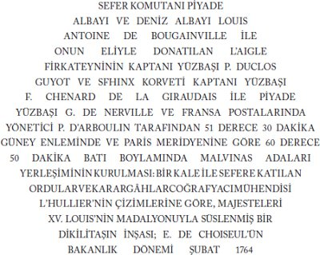

Montevideo'dan hareket, Malvinas Adaları'na kadar seyir, adaların İspanyollara teslimi, bu adaların tarihine ilişkin ayrıntılar.
28 Şubat 1767 günü iki İspanyol firkateyni ve hayvan yüklü bir tartanla[150] Montevideo'dan demir aldık. Don Ruis ve ben, ırmak[151] içinde onun öncülük etmesi, açık denize çıktıktan sonra da benim seyri yönetmem hususunda anlaşmıştık. Ama bir ayrılma olasılığını da göz önüne alarak, her firkateyne Malvinas Adaları'nı bilen deneyimli birer kılavuz vermiştim. Öğleden sonra demirlemek zorunda kaldık, çünkü sis ne anakarayı ne de Flores Adası'nı görmemize olanak veriyordu. Ertesi gün rüzgâr tersten esiyordu ama ben gene de hareket etmek niyetindeydim; bu ırmakta hayli güçlü olan akıntılar rüzgâra karşı voltaları kolaylaştırıyordu. Ama gün neredeyse kararmak üzereyken İspanyol komutandan hâlâ hiçbir işaret gelmemesi üzerine, ona, sis bir ara açıldığında Flores Adası'nı görebildiğimi, İngilizler Sığlığı'na fazla yakın demirlemiş bulunduğumu ve ertesi sabah rüzgâr yönü ne olursa olsun demir almak görüşünde olduğumu iletmek amacıyla bir subayımı gönderdim. Don Ruis'in yanıtı, alaylı kılavuzun kararına bağımlı olduğu, onunsa ancak elverişli ve istikrarlı bir rüzgâr altında yola çıkmak istediği yönündeydi. Bunun üzerine subayım benim adıma ona, sabah gün doğar doğmaz yelken açacağımı ve eğer gelgit ya da rüzgârın kuvveti, istemiyor olsam da ayrılmamıza yol açarsa, kendisini volta seyriyle ya da demirleyerek daha kuzeyde bekleyeceğimi bildirdi.
Tartan önceki gece hiç demirlememişti ve akşam vakti onu bir daha görmemek üzere gözden kaybettik. Üç hafta sonra, görevini tamamlamaksızın Montevideo'ya geri döndü. Gece fırtınalıydı, pamperos azgın biçimde esti ve demir taradık. Fundo ettiğimiz ikinci bir demir bizi tuttu. Gün doğunca İspanyol gemilerini gabya çubuklarıyla alt serenleri indirilmiş gördük; onlar bizden daha çok demir taramışlardı. Rüzgâr hâlâ ters ve şiddetliydi, deniz kabarmıştı; ancak saat dokuzda dört büyük yelkenle hareket edebildik. Öğle vakti, demirde kalmış İspanyolları gözden kaybetmiştik ve 3 Mart günü akşamında ırmaktan çıktık.
Malvinas Adaları'na geçişte kuzeybatıdan güneybatıya değişken rüzgârlar aldık; hemen her zaman fırtına vardı ve deniz çok dalgalıydı. Ayın 15 ve 16'sında bazı avaryalar nedeniyle yelken küçültmeye mecbur olduk. Kaldı ki direklerimiz çok özen gerektiriyordu, firkateynin iki yanındaki ağırlık eşit değildi ve kötü hava, onu daha dengeli hale getirecek yeni bir istiflemeye izin vermiyordu. Genel olarak ince ve uzun tekneler çok zorluklar çıkarır, yol alışları sık sık birçoğu sezilemeyen nedenlerle etkilenir; gerçek nedenleri ayırmak çok güçtür. Ancak deneyerek ve sınayarak çözülebilir, en mahirler bile yanılabilirler.[152] Derinliği ölçmeye başlayabildiğimiz 17'si öğleden sonradan başlayarak hep kalın bir sis altındaydık. Ayın 19'unda, her ne kadar benim hesaplarıma göre Sebaldes Adaları'nın[153] doğusunda olmamız gerekiyor idiyse de, görüş açıldığında kara göremeyince, Malvinas Adaları'nı geçmiş olmamızdan korktum ve batıya yönelmeyi seçtim; rüzgâr bu yörede pek ender rastlandığı biçimde bu kararımı destekliyordu. Yirmi-dört saat boyunca bu yönde çok yol aldım, Patagonya kıyılarında dibi bulunca mevkiimden emin oldum ve güvenle tekrar doğuya yöneldim. Nitekim ayın 21'inde öğleden sonra saat dörtte, kuzeydoğu kerte doğumuzda sekiz on fersah uzaklıkta Sebaldes Adaları'nı, kısa bir süre sonra da Malvinas Adaları'nı gördük. Kaldı ki eğer rüzgâra uyup Amerika kıyısına yönelsem ve sonra adaları enleme göre arasaydım, içine düştüğüm bu şaşkınlığı bertaraf edebilirdim.
Ayın 23'ü akşamı büyük körfeze girdik ve demirledik; ayın 24'ünde iki İspanyol firkateyni de aynı yerde demirledi. Malvinaslar'a gelişleri sırasında çok zorlanmışlardı. Ayın 16'sındaki fırtına onları pupadan esen rüzgârdan çıkmaya mecbur etmiş; komutanın gemisi zabitan helasını parçalayan, büyük kamaranın camlarını kıran ve geminin çok su almasına yol açan bir fırtına yemişti. Koloni için Montevideo'dan yüklenen hayvanların hemen tamamı fırtınada telef olmuştu. 25 Mart günü üç gemi de limana girdi ve palamar bağladılar.
1 Nisan günü, yerleşimimizi İspanyollara teslim ettim. İspanyol bayrağını çektiler, bayrak gündoğumunda ve batımında karadan ve gemilerden yirmi bir pare top atışıyla selamlandı. Henüz yeni kurulmakta olan bu kolonideki Fransızlara kralın bir mektubunu okumuştum. Bu mektupta Majesteleri, Katolik Kral'ın egemenliği altında kalmalarına izin veriyordu. Birkaç aile bu izinden yararlandılar, diğerleri İspanyol firkateynlerine bindiler ve 27'si sabahı Montevideo'ya hareket ettiler.[*5]
Bu adaların tarihine ilişkin bazı noktalara değinmem hoş görülsün.
Bana öyle geliyor ki, burayı ilk keşfeden ünlü Amerigo Vespucci'dir. O, Amerika'nın keşfi için çıktığı üçüncü yolculukta, 1502 yılında bu adaların kuzey kıyılarından geçmiştir. Gerçi bunun bir ada mı, yoksa kıtanın bir parçası mı olduğunu bilmiyordu; ama izlediği rotadan, vardığı enlemden, bu kıyılara ilişkin betimlemesinden, gördüğü kıyının Malvinas kıyıları olduğu sonucuna varmak kolaydır. Bundan daha temelsiz bir sav ileri sürmüş olmaksızın, Beauchesne Goüin'in[154] 1700 yılında Güney Denizi'nden dönüşünde, kendini Sebaldes Adaları'nda sanırken, Malvinaslar'ın doğu kıyısında demirlediğini belirtebilirim.
Beauchesne anlatısında, kendi adını verdiği adayı keşfettikten sonra Sebaldes Adaları'nın en doğuda olanının doğusunda demir attığını söyler. Önce belirtmek isterim ki Malvinas Adaları, Sebaldes Adaları'yla Beauchesne Adası arasında yer aldığına ve önemli bir büyüklüğe sahip olduğuna göre mutlaka Malvinas Adaları'nın kıyılarını görmüştür; hatta Sebaldes Adaları'nın doğusunda demirleyip de Malvinaslar'ı görmemek mümkün değildir. Zaten Beauchesne çok büyük tek bir ada görmüş, demirleme yerinden ayrıldıktan sonra ancak diğer iki ada karşısına çıkmıştır; rutubetli topraklarda, bataklıklar ve tatlı su gölleri ile kaplı ve kazlar, bağırtlaklar, ördekler ve su çulluklarıyla dolu bir arazide dolaşmıştır; hiç koruluğa rastlamamıştır. Bütün bunlar Malvinaslar'a pek uygun düşüyor. Buna karşılık Sebaldes Adaları dört küçük taşlık adadır; 1683'te Guillaume Dampierre orada boşuna su takviyesi yapmaya çalışmış ve uygun bir demirleme yeri bulamamıştır.
Ne olursa olsun, Malvinas Adaları günümüze kadar pek az tanınmıştır. Anlatıların çoğu onları bize ormanlarla kaplı olarak betimliyor. Kuzey kıyılarına yaklaşan ve oraya Virginie d'Hawkins adını veren ve oldukça iyi betimleyen Richard Hawkins, burada insanların yaşadığını kesinliyor ve ateş gördüğünü iddia ediyordu. Yüzyılın başında Saint-Malo'dan gelen Saint-Louis gemisi, güneydoğu kıyısında, gemiyi donatanın adına atfen Anican Adaları adı verilen birkaç küçük ada tarafından korunan, elverişsiz bir körfezde demirledi; ancak amacı sadece su almaktı ve keşfe girişmeden yoluna devam etti.
Bununla birlikte bu adaların, Güney Denizi'ne giden gemilere uğrak yeri ve güney topraklarının keşfi için bir çıkış limanı olması bütün ulusların denizcilerini etkilemişti. 1763 yılının başlarında Fransa, bu adalarda bir yerleşim kurma kararı aldı. Bakanlığa, masrafları bana ait olmak üzere ve biri kardeşimin oğlu diğeri dayım olan Bay de Nerville ve Bay d'Arbolin'in yardımlarıyla bu işe girişmeyi önerdim; derhal, Saint-Malo'da, şu anda ikinci kaptanım olan Bay Duclos Guyot'nun gözetiminde, yirmi toplu L'Aigle ve on iki toplu Le Sphinx gemilerini inşa ettirmeye ve donatmaya giriştim ve böyle bir sefer için gereken her şeyi temin ettim. Gemilere birçok Akadyalı aileyi[155] bindirdim; bunlar çalışkan ve zeki insanlardır. Ayrıca, bu namuslu ve talihsiz yurttaşlar, şaşmaz bağlılıkları nedeniyle Fransa için çok değerlidirler.
15 Eylül 1763'te Saint-Malo'dan yelken açtım. Bay de Nerville benimle birlikte L'Aigle gemisindeydi. Biri Brezilya kıyılarındaki Santa-Catarina Adası'nda, diğeri çok sayıda at ve boynuzlu hayvan yüklediğimiz Montevideo'da iki uğraktan sonra, 31 Ocak 1764'te Sebaldes Adaları'na vardık. Malvinas kıyılarının kuzeybatı ucuyla Sebaldes Adaları arasında kalan çok geniş bir girintiye doğru gittim; ama orada elverişli bir demirleme yeri bulamayınca kuzey kıyısını izledim ve 3 Şubat günü adaların doğu ucuna vardığımda, orada, bir ilk yerleşim için bana uygun görünen bir körfeze girdim.
Hawkins'de, Wood Roger'de ve başkalarında bu adaların ormanlarla kaplı olduğu izlenimine yol açan aynı yanılsama benim yol arkadaşlarım üzerinde de etkili oldu. Karaya çıkınca şaşırarak gördük ki, kıyı boyunca yol alırken bizim orman sandığımız, meğerse oldukça boylu ve birbirlerine pek yakın sazlıklardan ibaretmiş. Gövde kuruyunca yaklaşık iki metre yüksekliğe kadar ölü ot rengini alıyor ve onun üzerinde güzel yeşil renkte bir demet yeni sürgün yükseliyor; öyle ki uzaktan bakıldığında bütün saplar bir arada, orta yükseklikte bir orman görünümü veriyor. Bu sazlar sadece deniz kenarında ve küçük adalarda yetişiyor; büyük karanın dağlarının bazı yerleri bütünüyle fundalıklarla kaplı, bunlar uzaktan bakıldığında koruluk sanılıyor.
Hemen düzenlediğim ve kendi giriştiğim birçok açınsama yürüyüşü bize ne herhangi türde bir orman ne de o zamana kadar bu topraklara uğramış olabilecek herhangi bir gemiden bir iz keşfettirdi. Sadece bol miktarda, hem ısınmada hem de demir ocaklarında odunun yerine geçebilecek nitelikte çok iyi bir turba buldum. Her yerinde suyu pek güzel küçük ırmakların aktığı uçsuz bucaksız ovalarda dolaştım. Doğa, insanların varlığını sürdürebilmesi için yalnızca balıkçılık ve hem kara hem de deniz av hayvanlarından başka bir şey vermiyordu. Aslında av çok boldu ve kolaydı. Oraya vardığımızda, o zamana kadar adanın tek sakini hayvanların bize korkusuzca yaklaşmalarını ve bilinmeyen bir nesneyle karşılaşmanın yarattığı merakla yapılan hareketler dışında bir davranışta bulunmamalarını izlemek çok garipti. Kuşları elle yakalamak mümkün oluyordu, bazıları duran insanlara konuyorlardı; insanoğlunun, zavallı hayvanların onda, kendi kanlarıyla beslenen yırtıcı karakteri içgüdüsel olarak tanımasına olanak verecek bir işaret taşımadığı ne kadar doğru. Bu güven çok sürmedi: kısa sürede en acımasız düşmanlarından çekinmeyi öğrendiler.
17 Mart'ta,[156] körfezin sonundan bir fersah beride, kuzey kıyısında, körfeze çok dar bir boğazla bağlı bir limanın kıyısında yeni koloninin yerini belirledim. Başlangıçta bu koloni yirmi dokuz kişiden oluşuyordu, bunlardan beşi kadın üçü de çocuktu. Onlara hemen sazlarla kaplı kulübeler ve iki yıl için bırakacağım erzak, giysi ve her türlü malzemeyi alacak büyüklükte bir depo inşa etmeye giriştik. Bu çalışmalar gemiciler tarafından gerçekleştirildi; her iki geminin kurmayları da, on dört parça top yerleştirilebilecek büyüklükte bir küçük tabyayı kerpiç ve sazlarla inşa etmeye koyuldu. Bu işliğin başında çalışıyordum ve olağanüstü koşulların insanları nasıl coşturduğunu ve güçlerine güç kattığını hayranlıkla izledim. Bu zorlu çalışmaların sürdüğü on beş gün boyunca, bu subayların gayreti bir an bile azalmadı; çalışma şafakla başlıyor, ancak gece olunca duruyordu. Tabya oldukça sağlam biçimde inşa edildi, toplar batarya halinde yerleştirildi ve bu küçük kalenin ortasına yirmi ayak yüksekliğinde bir taş anıt diktik.[157] Kralın portresi dikilitaşın bir cephesini süslüyordu; temeline de birkaç sikke ile birlikte, bir yüzünde girişimin tarihi, öteki yüzünde kralın kabartma portresi ile Tibi serviat ultima Thule[158] yazısı kazınmış bir madalyon gömüldü.
Bu madalyonun üzerindeki yazıt şöyleydi:

Bu metnin başına da şu sözler yazılmıştı: CONAMUR TENUES GRANDIA[159]
Yerleşenleri cesaretlendirmek ve kendilerine sonrası için vaat ettiğim yardımlar konusunda güvence vermek amacıyla Bay de Nerville, onların başında kalmayı ve yeryüzünün güney yarımküresinde o tarihte bu kadar güneyde tek olan, dünyanın bir ucundaki bu güçsüz yerleşimin zorluklarını paylaşmayı kabul etti. 5 Nisan 1764 tarihinde kral adına adalara törenle el koydum ve ayın 8'inde Fransa'ya doğru yelken açtım.
5 Ocak 1765'te koloniyi tekrar gördüm; onları sağlıklı ve hoşnut buldum. Kendilerine getirdiğim yardım malzemelerini boşalttıktan sonra, yapı ahşabı, kazıklar ve ağaç fidanları temin etmek üzere Magellan Boğazı'na gittim ve koloninin sürekliliği için zorunlu seferleri başlattım. İşte orada Komodor Byron'un gemilerine rastladım. Kendisi Malvinas Adaları'nı ilk defa açınsadıktan sonra,[160] Güney Denizi'ne açılmak üzere boğazı geçmekteydi. İzleyen 27 Nisan tarihinde Malvinaslar'dan ayrılırken, koloni kurmaylar dahil seksen kişiden oluşuyordu.[161]
1765 yılında L'Aigle'i tekrar Malvinaslar'a gönderdik; kral yük gemilerinden birini, L'Étoile'i onun yanına kattı. Bu iki gemi taşıdıkları malzemeyi ve yeni yerleşecek insanları bıraktıktan sonra, koloni için odun getirmek üzere birlikte Magellan Boğazı'na gitti. Artık yerleşim bir şekil almaya başlamıştı. Komutan ve idare amiri taştan inşa edilmiş elverişli evlerde kalıyorlardı. Diğer sakinler duvarları kerpiç evlerde yaşıyorlardı. Hem ortak mallar hem de kişisel ihtiyaçlar için üç ambar vardı. Magellan Boğazı'ndan taşınan ağaç, bu yapıların ahşap kafesleri ile kıyıları keşfetmeye yarayacak iki uskunanın yapımında kullanılmıştı. L'Aigle bu son yolculuğundan Fransa'ya dönerken denizkurdu yağı ve orada tabaklanmış denizkurdu postu yüklemişti. Ayrıca başarı umudu yitirilmeden çeşitli tarım denemeleri de yapılmıştı; Avrupa'dan getirilen tohumların büyük bölümü yöreye kolayca uyum sağlamıştı; hayvanların çoğaldığı kesindi ve halkın sayısı da o tarihte yaklaşık yüz elliye ulaşmıştı.
Bununla birlikte, daha önce de belirttiğimiz gibi Komodor Byron 1765 yılı Ocak ayında Malvinas Adaları'nı açınsamaya gelmişti. Bizim yerleşimimizin batısında, bizim tarafımızdan daha önce Port de la Croisade[162] adı verilmiş olan bir doğal limana demirlemiş ve hiç kimseyi oraya bırakmamakla birlikte, İngiliz tahtı adına bu adalara el koymuştu. Port Egmont adını verdikleri Port de la Croisade'a İngilizler ancak 1766 yılında yerleşmek üzere bir koloni gönderdiler. Aynı yılın Aralık ayı başında Jason firkateyninin komutanı yüzbaşı Macbride bizim yerleşimimize uğradı. Bu toprakların Büyük Britanya Kralı'na ait olduğunu iddia etti, eğer bunu reddetmekte ısrar edersek saldırma tehdidi savurdu; komutana bir ziyarette bulundu ve aynı gün yelken açtı.
İspanyollara teslim ettiğimiz sırada Malvinas Adaları'nın durumu işte buydu. İspanyolların temel hakları, böylece, bizim ilk iskân eden oluşumuzdan kaynaklanan haklarla doğrulanıyordu. Bu adalardaki üretime, var olan hayvanlara ilişkin bilgiler, Bay de Nerville'in orada geçirdiği üç yılın olanak sağladığı gözlemlerin sonucudur ve bunlar bir sonraki başlığın konusunu oluşturacaktır. Bay de Commerçon hiçbir zaman Malvinas Adaları'nda bulunmadığından ve oranın doğa bilgisi bazı açılardan çok yararlı olduğundan ben bu ayrıntılara girmeyi gerekli gördüm.[*6]